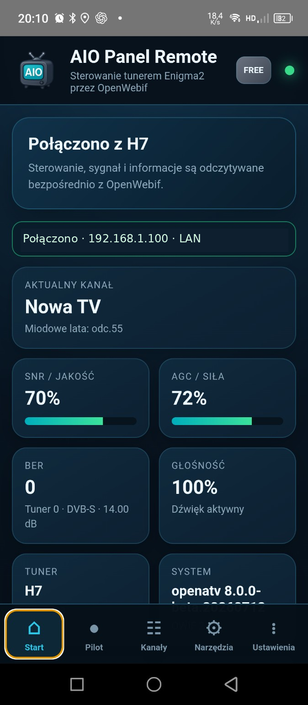
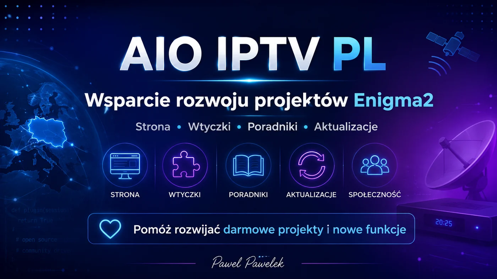

POTRZEBUJESZ POMOCY?
Nie musisz szukać rozwiązania sam.
Najpierw sprawdź Społeczność AIO i poradniki. Jeśli problem wymaga dokładniejszej diagnozy, możesz przygotować kompletne zgłoszenie albo skontaktować się z administratorem.
SPOŁECZNOŚĆ AIO / ENIGMA2
Społeczność AIO łączy użytkowników Enigma2 bezpośrednio na AIO-IPTV.pl. Zadawaj pytania, dodawaj zdjęcia i zrzuty błędów, dziel się rozwiązaniami oraz sprawdzaj oficjalne informacje o projektach.
NAJWAŻNIEJSZE MIEJSCA
Najczęściej używane działy są dostępne od razu — bez przeszukiwania kilku poziomów menu.
Pytania, odpowiedzi, dyskusje i pomoc użytkowników.
Wtyczki, aplikacje, systemy i pozostałe pliki.
Instrukcje krok po kroku i praktyczna konfiguracja.
Oficjalne komunikaty, nowe wersje i ważne informacje.
Gotowe obrazy i Multi-Click dla obsługiwanych tunerów.
Aktualne zestawy kanałów dla Enigma2.
Android, Windows i narzędzia współpracujące z Enigma2.
Pomoc techniczna, kontakt i wsparcie rozwoju projektu.
Diagnostyka, generatory, baza błędów i narzędzia AIO.
POTRZEBUJESZ POMOCY?
Najpierw sprawdź Społeczność AIO i poradniki. Jeśli problem wymaga dokładniejszej diagnozy, możesz przygotować kompletne zgłoszenie albo skontaktować się z administratorem.
WSPARCIE PROJEKTU
Wsparcie jest dobrowolne i pomaga rozwijać stronę, Społeczność AIO, poradniki oraz bezpłatne projekty Enigma2.
CO NOWEGO
Najważniejsze aktualizacje projektów i oficjalne komunikaty AIO-IPTV.pl.
PROJEKTY AIO
Jeśli przyszedłeś po konkretny projekt, wybierz go poniżej albo otwórz pełny katalog.
Instalatory, listy, picony, diagnostyka, aktualizacje i narzędzia systemowe.
M3U, Xtream i MAC/Stalker z EPG, piconami i eksportem bukietów.
Radio internetowe dla Enigma2 z rozbudowaną obsługą stacji.
Mapowanie XMLTV i import programu TV do systemowego EPG.
Pilot, kanały, EPG, picony i streaming SAT/IPTV na telefonie.
Synchronizacja list kanałów z backupem i możliwością cofnięcia zmian.
APLIKACJA MOBILNA
Sterowanie tunerem Enigma2 z telefonu: pilot, kanały, EPG, picony oraz streaming SAT i IPTV.

NARZĘDZIA I WIEDZA
Komendy instalacyjne, baza błędów, status projektów i narzędzia diagnostyczne dla Enigma2.
PROSTA ŚCIEŻKA
Nie wiesz, od czego zacząć? Skorzystaj z tej kolejności.
Sprawdź istniejące wpisy albo opisz swój problem.
Skorzystaj z instrukcji, bazy błędów i diagnostyki.
Przejdź do wtyczki, aplikacji, systemu albo listy.
Pomóż kolejnym użytkownikom z podobnym problemem.

DOBROWOLNE WSPARCIE
Wsparcie pomaga rozwijać AIO-IPTV.pl, zaplecze Społeczności AIO, poradniki oraz darmowe projekty Enigma2. Wszystkie dostępne sposoby i szczegóły znajdziesz w osobnym dziale Wsparcie.
SZYBKA INSTALACJA
Wklej polecenie w terminalu OpenWebif, SSH lub Telnet. Po instalacji wykonaj Restart GUI.
wget -q -O - https://raw.githubusercontent.com/OliOli2013/PanelAIO-Plugin/main/installer.sh | /bin/sh